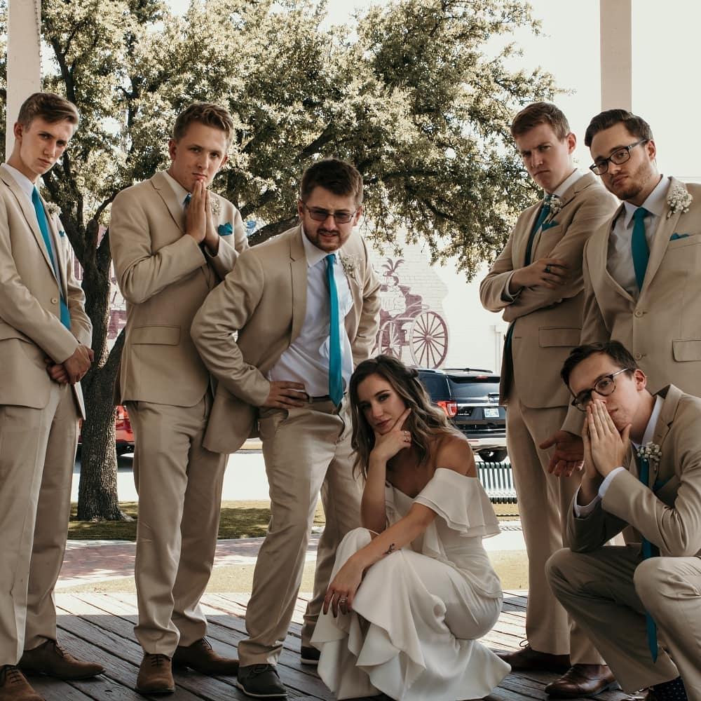

About Me
I am a new transplant into the world of software development, but love it so far! I am 22 years old and grew up in a rural town in South Carolina (and am 2nd on the left in the picture). I attended college at Emerson College in Boston, MA, where I earned a BA in film and media production. I spent my final semester at the Emerson College campus in Los Angeles, and moved out here fully after that semester ended. My three favorite things in the world are my family, my friends and UNC basketball.
My hobbies include: coding, screenwriting, playing videogames, hanging out with friends, and watching movies.